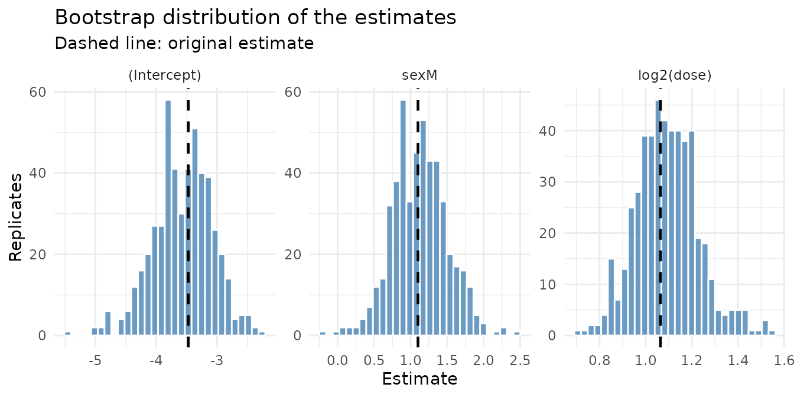
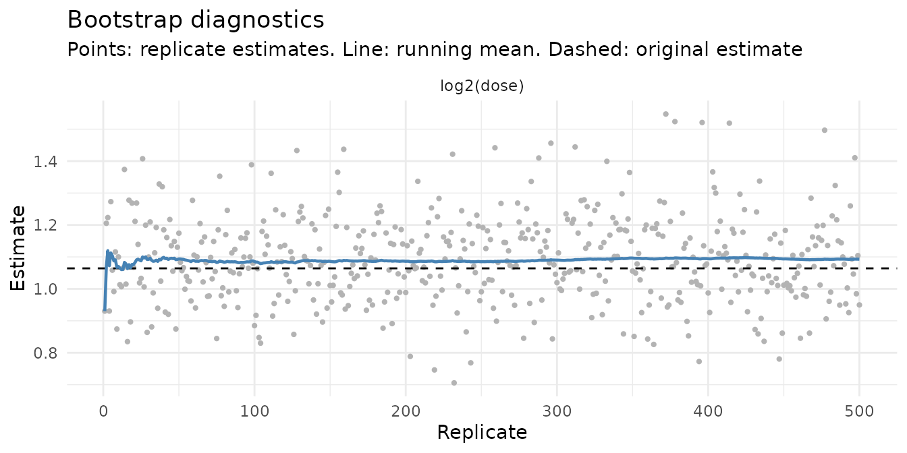
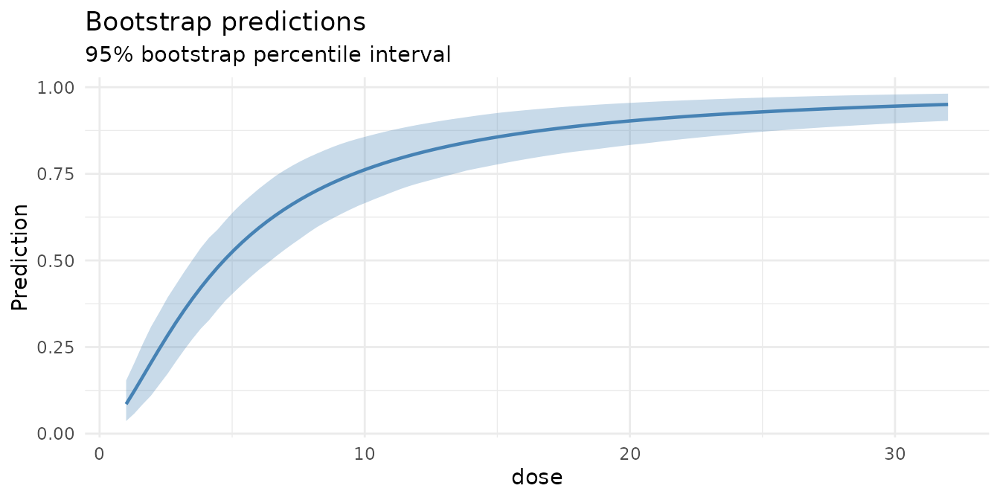

The idea
Standard errors and confidence intervals for regression models usually rest on large-sample approximations. The parametric bootstrap checks, and if necessary replaces, those approximations by simulation:
- fit the model to the data;
- simulate a new response from the fitted model, keeping the covariates fixed;
- refit the model to the simulated response;
- repeat steps 2 and 3 many times.
Because the data-generating mechanism in step 2 is known exactly (it is the fitted model), the spread of the refitted estimates around the original one shows how the estimator behaves in samples like yours: whether it is biased, how variable it is, and whether the textbook intervals achieve their nominal coverage.
parametricboot runs this loop for lm(),
glm(), lme4::lmer(),
lme4::glmer() and survival::coxph() fits, and
provides tools to summarise the result.
A dose-response experiment
Collett (1991) describes an experiment in which batches of 20 tobacco budworm moths of each sex were exposed to six doses of a pyrethroid. The response is the number of moths killed.
budworm <- data.frame(
sex = rep(c("M", "F"), each = 6),
dose = rep(c(1, 2, 4, 8, 16, 32), times = 2),
dead = c(1, 4, 9, 13, 18, 20, 0, 2, 6, 10, 12, 16),
n = 20
)
fit <- glm(cbind(dead, n - dead) ~ sex + log2(dose), data = budworm, family = binomial())pb_simulate() draws the replicates. With
seed, the result is reproducible and your session’s random
number stream is left untouched.
res <- pb_simulate(fit, n = 500, seed = 2025)
res
#> <pb_boot> Parametric bootstrap
#> Model: glm (binomial)
#> Replicates: 500
#> Terms: (Intercept), sexM, log2(dose)The model is refitted by re-evaluating its call on the original data,
so the two-column response and the log2(dose) term need no
special treatment. The only requirement is that the model was fitted
with a data argument.
Summaries
pb_summary_table(res)
#> term estimate boot_mean bias std_error mse coverage
#> 1 (Intercept) -3.473155 -3.564166 -0.09101044 0.4860021 0.2440085 0.948
#> 2 sexM 1.100743 1.123543 0.02279990 0.3799061 0.1445598 0.952
#> 3 log2(dose) 1.064214 1.092733 0.02851908 0.1363093 0.0193564 0.942
#> lower upper
#> 1 -4.5774052 -2.644243
#> 2 0.4128645 1.855992
#> 3 0.8449368 1.408648-
bias,std_errorandmsedescribe the bootstrap distribution around the original estimate. -
coverageis the proportion of replicates whose own Wald interval contains the original estimate, that is, the estimated actual coverage of the nominal 95% Wald interval. -
lowerandupperare bootstrap confidence limits.
Three kinds of interval are available, through
pb_confint() or the usual confint()
generic:
pb_confint(res, type = "percentile")
#> term estimate lower upper
#> 1 (Intercept) -3.473155 -4.5774052 -2.644243
#> 2 sexM 1.100743 0.4128645 1.855992
#> 3 log2(dose) 1.064214 0.8449368 1.408648
pb_confint(res, type = "basic")
#> term estimate lower upper
#> 1 (Intercept) -3.473155 -4.3020679 -2.368905
#> 2 sexM 1.100743 0.3454951 1.788622
#> 3 log2(dose) 1.064214 0.7197803 1.283491
confint(res, level = 0.9, type = "normal")
#> 5 % 95 %
#> (Intercept) -4.1815471 -2.582743
#> sexM 0.4530536 1.702833
#> log2(dose) 0.8114861 1.259904Plots
pb_plot_estimates() shows the bootstrap
distributions:
pb_plot_estimates(res)
pb_plot_diagnostics() helps to judge whether
n is large enough. The running mean should have settled
down by the right-hand edge of the plot.
pb_plot_diagnostics(res, parameter = "log2(dose)")
All plots are ordinary ‘ggplot2’ objects, and pb_tidy()
returns the replicates in long format if you prefer to build your
own.
Predictions
pb_predict_boot() returns one column of predictions per
replicate; extra arguments go to predict().
new_moths <- data.frame(sex = c("M", "F"), dose = 8)
preds <- pb_predict_boot(res, new_moths, type = "response")
dim(preds)
#> [1] 2 500
t(apply(preds, 1, quantile, probs = c(0.025, 0.5, 0.975)))
#> 2.5% 50% 97.5%
#> 1 0.5864280 0.6950555 0.8019143
#> 2 0.3161773 0.4301403 0.5545194pb_plot_predictions() does this for a whole grid and
plots the result:
males <- data.frame(sex = "M", dose = seq(1, 32, length.out = 100))
pb_plot_predictions(res, males, x = "dose", type = "response")
When refits misbehave
Refits that throw an error are dropped, and refits that raise
warnings are counted rather than printed one by one. Both are reported
in a single warning, and the second kind deserves attention. Consider a
logistic regression on the 32 rows of mtcars:
small <- glm(vs ~ mpg, data = mtcars, family = binomial())
res_small <- pb_simulate(small, n = 500, seed = 2025)
#> Warning: 6 of 500 bootstrap refits produced warnings (for example convergence
#> problems).In a few of the simulated data sets the two groups are perfectly
separated by mpg. The maximum likelihood estimate does not
exist for such data, and glm() returns whatever huge value
the iterations stopped at. A handful of these replicates dominates every
mean and standard deviation:
pb_key_stats(res_small)[c("term", "estimate", "bias", "std_error")]
#> term estimate bias std_error
#> 1 (Intercept) -8.8330726 -4.9004163 44.752399
#> 2 mpg 0.4304135 0.2487127 2.278504pb_drop_warned() excludes the replicates that raised
warnings:
clean <- pb_drop_warned(res_small)
clean
#> <pb_boot> Parametric bootstrap
#> Model: glm (binomial)
#> Replicates: 500 (6 dropped)
#> Terms: (Intercept), mpg
pb_key_stats(clean)[c("term", "estimate", "bias", "std_error")]
#> term estimate bias std_error
#> 1 (Intercept) -8.8330726 -1.80982691 4.4722676
#> 2 mpg 0.4304135 0.09165097 0.2235875This reveals the genuine, and substantial, small-sample bias of logistic regression: both coefficients are overestimated in absolute value by about a fifth. Two caveats apply.
- The cleaned summaries are conditional on the fit being well behaved. Report the proportion of dropped replicates with them.
- Percentile intervals are far less sensitive than means: a quantile registers that a few replicates were extreme, but not by how much. They do not need this treatment, and are arguably more honest without it:
pb_confint(res_small)
#> term estimate lower upper
#> 1 (Intercept) -8.8330726 -25.2280569 -4.829614
#> 2 mpg 0.4304135 0.2393271 1.296134
pb_confint(clean)
#> term estimate lower upper
#> 1 (Intercept) -8.8330726 -23.1226342 -4.823974
#> 2 mpg 0.4304135 0.2388539 1.131722Replicates are never dropped automatically, because not every warning
signals a useless fit. res$warned flags the affected
replicates so that you can inspect res$replicates before
deciding.
Mixed models
For ‘lme4’ models, new random effects are drawn for every replicate
and the summaries refer to the fixed effects. Refitting mixed models is
slow, so this is where pb_parallel() pays off: it takes the
same arguments as pb_simulate(), plus workers,
and returns an identical result for a given seed.
cbpp <- lme4::cbpp
gm <- lme4::glmer(
cbind(incidence, size - incidence) ~ period + (1 | herd),
data = cbpp, family = binomial()
)
res_gm <- pb_simulate(gm, n = 100, seed = 1)
#> boundary (singular) fit: see help('isSingular')
# Equivalent, on two cores: pb_parallel(gm, n = 100, workers = 2, seed = 1)
pb_summary_table(res_gm)
#> term estimate boot_mean bias std_error mse coverage
#> 1 (Intercept) -1.398343 -1.4082260 -0.0098830876 0.2281372 0.05162379 0.96
#> 2 period2 -0.991925 -0.9926646 -0.0007395901 0.2867139 0.08138338 0.97
#> 3 period3 -1.128216 -1.1266335 0.0015827549 0.3720195 0.13701701 0.94
#> 4 period4 -1.579745 -1.6396247 -0.0598793034 0.4260859 0.18331925 0.96
#> lower upper
#> 1 -1.831125 -0.9797858
#> 2 -1.612817 -0.5969268
#> 3 -1.920486 -0.5743643
#> 4 -2.608564 -0.9305711Pass re.form = NA to pb_predict_boot() for
population-level predictions.
Cox models
A Cox model leaves the baseline hazard and the censoring mechanism
unspecified, so there is no fully parametric model to simulate from. For
coxph fits, pb_simulate() uses the model-based
resampling algorithm of Davison and Hinkley (1997, Algorithm 7.3):
- failure times are drawn from the fitted survivor function , with based on the Breslow estimate of the baseline hazard;
- subjects who were censored keep their censoring time, and the others get a censoring time drawn from the Kaplan-Meier estimate of the censoring distribution, conditional on exceeding their observed time.
Only right-censored, unweighted models without strata(),
tt() or penalised terms are supported.
library(survival)
cox <- coxph(Surv(time, status) ~ age + sex + ph.ecog, data = lung)
res_cox <- pb_simulate(cox, n = 200, seed = 1, keep_fits = FALSE)
pb_summary_table(res_cox)
#> term estimate boot_mean bias std_error mse
#> 1 age 0.01106676 0.01134408 0.0002773194 0.008398651 7.026156e-05
#> 2 sex -0.55261240 -0.55626155 -0.0036491495 0.182379304 3.310922e-02
#> 3 ph.ecog 0.46372848 0.47315099 0.0094225131 0.108767357 1.185997e-02
#> coverage lower upper
#> 1 0.970 -0.005943956 0.02515576
#> 2 0.935 -0.953891755 -0.20473691
#> 3 0.945 0.249111034 0.68135323Here the bootstrap standard errors are close to the
partial-likelihood ones, shown below, and the Wald intervals have close
to nominal coverage, which is reassuring. keep_fits = FALSE
stores only the estimates, which saves memory when you do not need
predictions.
Comparing models
pb_compare_models() bootstraps several models and
reports the sampling variability of a fit criterion under each of them.
A difference in AIC that is small relative to boot_sd
should not be over-interpreted.
fits <- list(
common_slope = fit,
sex_specific_slope = update(fit, . ~ sex * log2(dose))
)
pb_compare_models(fits, n = 100, seed = 1)
#> model observed boot_mean boot_sd lower upper
#> 1 common_slope 42.86747 46.59610 4.062564 40.02508 56.10672
#> 2 sex_specific_slope 43.10413 47.24012 4.027649 40.53773 55.49608Practical advice
- Use at least a few hundred replicates for standard errors and 1000
or more for confidence limits; check
pb_plot_diagnostics(). - The parametric bootstrap is only as good as the model. It quantifies
sampling variability assuming the fitted model is right; it
does not detect misspecification.
pb_resample()offers simple case resampling if you want a nonparametric point of comparison. - Models must be fitted with a
dataargument so that they can be refitted.